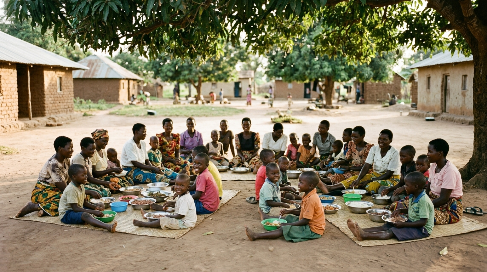
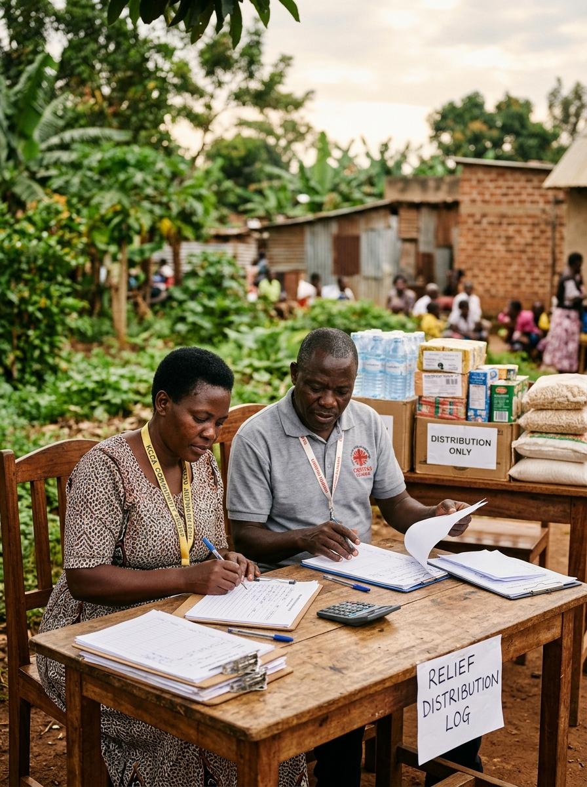
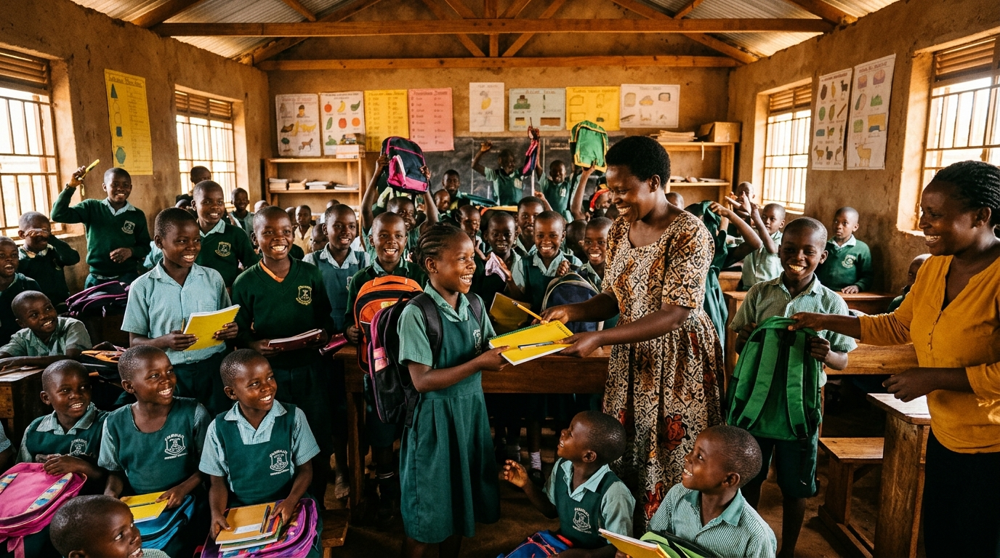
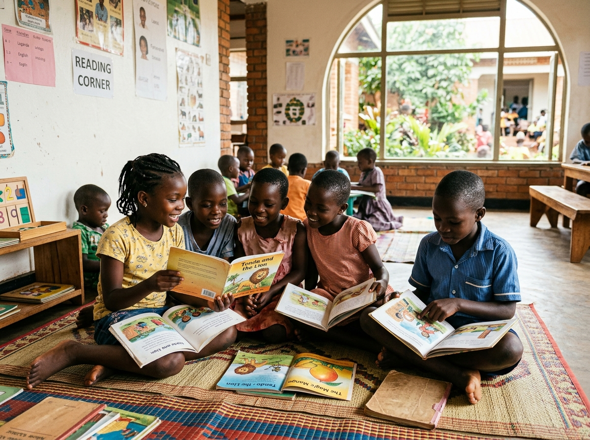
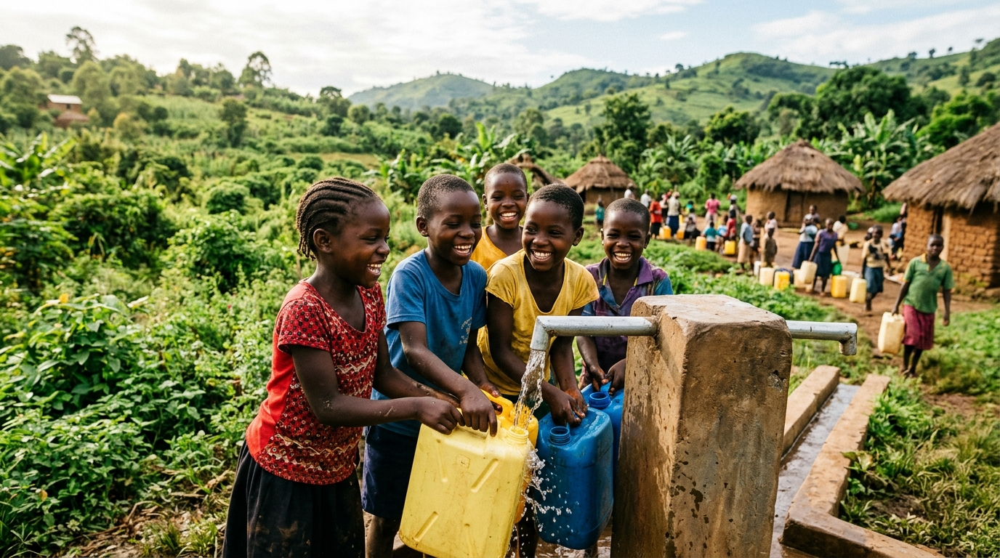

Community Child Nutrition
Warm meals and staple household packs helping mothers and caretakers nourish growing children.
Who we are
Mustaqiim Relief and Charity Foundation is a humanitarian organisation operating from Nsambya, Kampala. We collaborate directly with neighbourhood elders, teachers, volunteers, and local technicians to deliver food security, child education support, seasonal Qurbani, and clean water access.
Every contribution is coordinated transparently with community leaders so household assistance and school supplies reach widows, orphans, and vulnerable families quietly and with dignity.


Helping Children in Uganda
Across Kampala and rural Ugandan parishes, financial hardship can interrupt a child's primary education or daily nutrition. Our Kampala volunteers partner with community caretakers and local schools to deliver essentials without stigma.

Warm meals and staple household packs helping mothers and caretakers nourish growing children.

Shared reading rooms, literacy books, and school term kits coordinated with local educators.
What we do
Every initiative is shaped with local leaders and executed with clear documentation.
Programmes

Qurbani / Udhiya
Reserve your Qurbani share directly with our Kampala team. Livestock are sourced locally, slaughtered during the blessed days according to guidance, and distributed fresh to verified households, widows, and orphans.
Explore Qurbani options
Transparency
Give with confidence
Contributions start from US$3. Below are illustrative examples; actual programme costs vary with local market conditions.
Field Updates
Gallery

FAQ
Clear answers on donations, child education support, Qurbani, refunds, and data privacy.
Coordinate a one-time contribution from US$3, help equip a student with school supplies, or reserve a Qurbani share with full transparency.